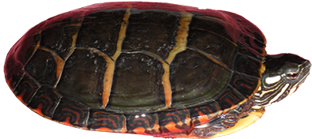

Sad news today, Lonesome George, the Galapagos Tortoise has passed away. George was the last known individual of his subspecies, Geochelone abingdoni, also called the Pinta Island tortoise. George was estimated to be around 100 years old at the time of his death. So far the cause of death is unknown, but George's body is being kept in a cold chamber to prevent decomposition until a necropsy is done to determine his exact cause of death. To read more about this tragic event visit this link.

What Makes Turtles So Awesome?
Turtles are one of the oldest reptile groups on the planet. They are older than lizards, snakes and even crocodiles. Turtles are part of the reptile order Testudines characterized by the shell they have that acts as a shield. The smallest turtles in the world only grow to four inches and the largest can reach close to seven feet and over 2000 pounds. They truly are 21st century dinosaurs!